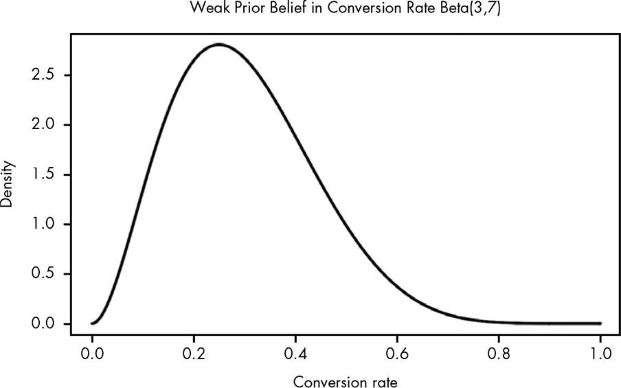
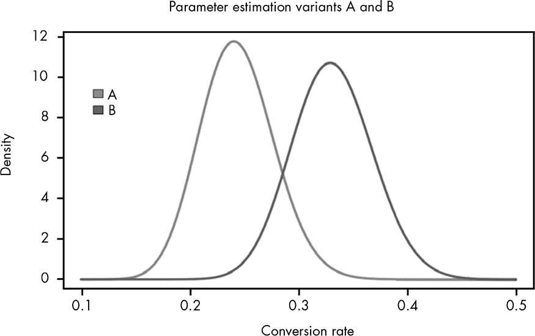
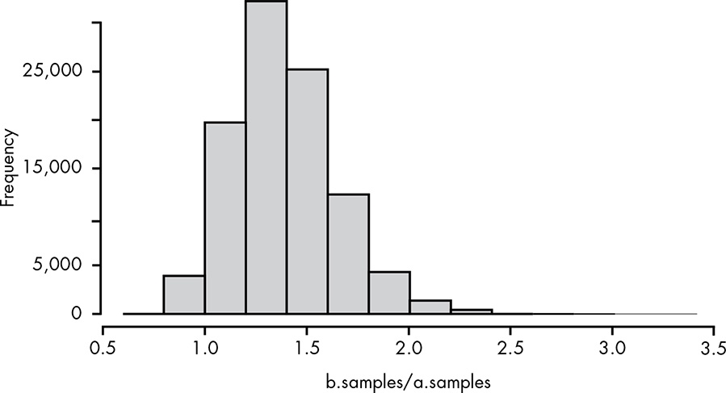
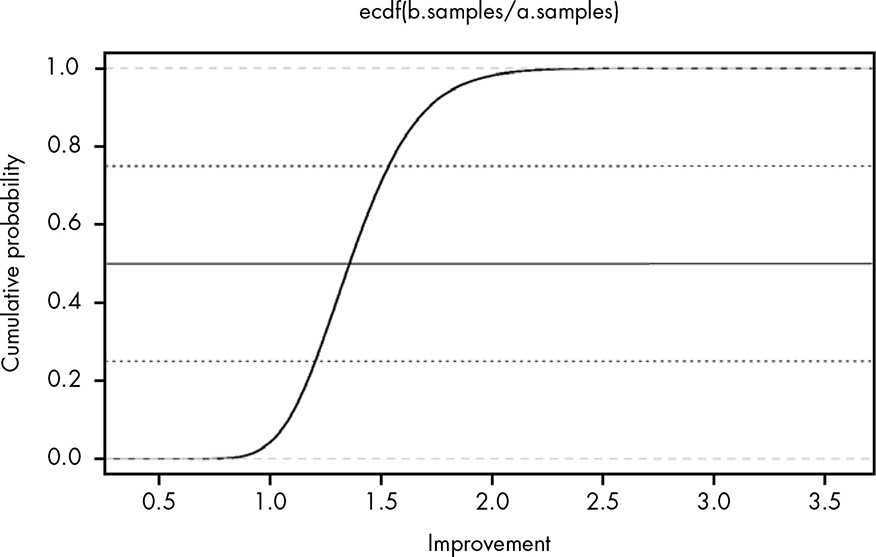
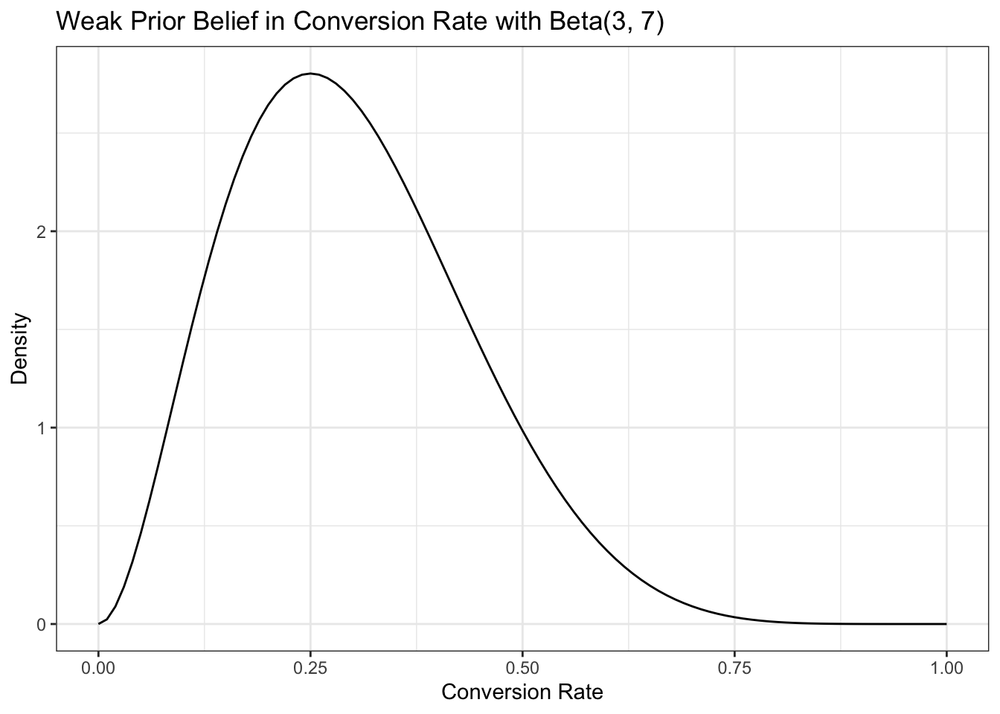
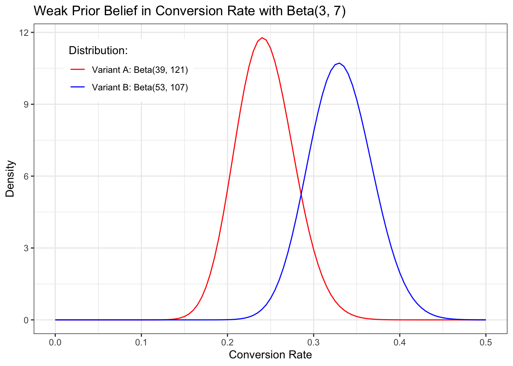
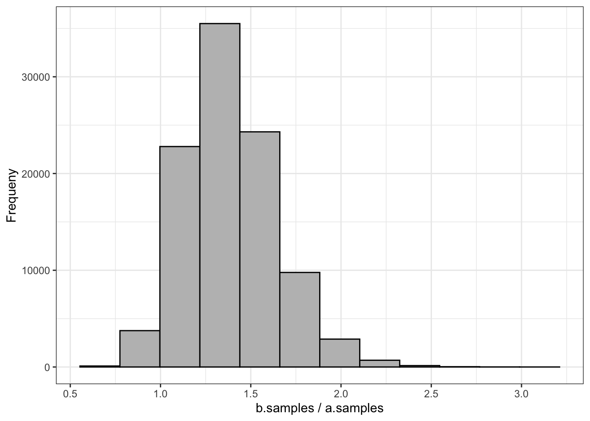
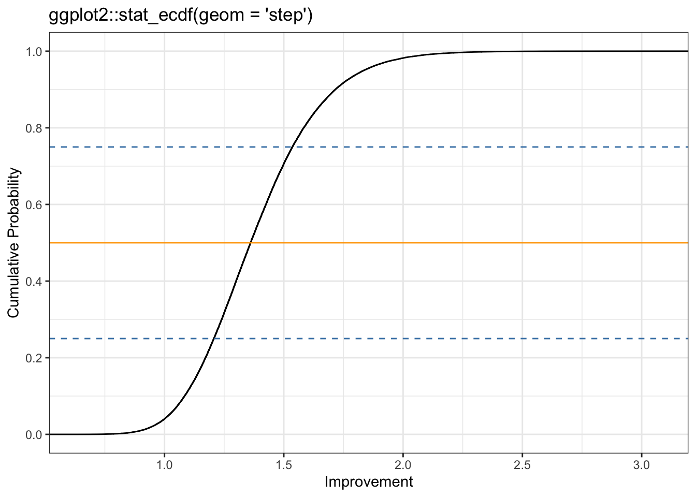

[1] 0.9598515 From Parameter Estimation to Hypothesis Testing: Building a Bayesian A/B Test
In this chapter, we’ll test our belief that removing an image from an email will increase the click-through rate against the belief that removing it will hurt the click-through rate. …
Since we already know how to estimate a single unknown parameter, all we need to do for our test is estimate both parameters—that is, the conversion rates of each email. Then we’ll use R to run a Monte Carlo simulation and determine which hypothesis is likely to perform better—in other words, which variant, A or B, is superior. A/B tests can be performed using classical statistical techniques such as t-test, t-tests (GLOSSARY), but building our test the Bayesian way will help us understand each part of it intuitively and give us more useful results as well.
15.1 Setting Up a Bayesian A/B Test
For our test we’re going to send one variant with images like usual, and another without images. The test is called an A/B test because we are comparing variant A (with image) and variant B (without) to determine which one performs better.
The 300 people we’re going to test will be split up into two groups, A and B. Group A will receive the usual email with a big picture at the top, and group B will receive an email with no picture. The hope is that a simpler email will feel less “spammy” and encourage users to click through to the content.
15.2 Finding Our Prior Probability
We’ve run an email campaign every week, so from that data we have a reasonable expectation that the probability of clicking the link to the blog on any given email should be around 30 percent. … We’ll settle on Beta(3,7) for our prior probability distribution. This distribution allows us to represent a beta distribution where 0.3 is the mean, but a wide range of possible alternative rates are considered.

15.2.1 Collecting Data
| Clicked | Not clicked | Observed conversion rate | |
|---|---|---|---|
| Variant A | 36 | 114 | 0.24 |
| Variant B | 50 | 100 | 0.33 |
We are going to add beta and likelihood probabilities using Equation 14.1:
Prior: Beta(3,7) Likelihood Variant A (with picture): Beta(3 + 36, 7 + 114) = Beta(39, 121) Likelihood Variant B:(without picture) Beta(3 + 50, 7 + 100) = Beta(53, 107)

Variant B looks better, but there is an overlap.
how sure can we be that B is the better variant? This is where the Monte Carlo simulation comes in.
15.3 Monte Carlo Simulations
A MCMC,Monte Carlo simulation (GLOSSARY) is any technique that makes use of random sampling to solve a problem. In this case, we’re going to randomly sample from the two distributions, where each sample is chosen based on its probability in the distribution so that samples in a high-probability region will appear more frequently.
We can imagine that the posterior distribution represents all the worlds that could exist based on our current state of beliefs regarding each conversion rate.
15.3.1 In How Many Worlds Is B the Better Variant?
What we see here is that in 96 percent of the 100,000 trials, variant B was superior. We can imagine this as looking at 100,000 possible worlds.
Caution
Will Kurt remarks that this calculation was like a single t-test with a flat prior Beta(1,1) resulting in a p-value of 0.4, often considered “statistically significant”. But it seems that the Monte Carlo simulation has to advantages:
- We built this test from scratch (as Will argued)
- We do not only know how sure we can be that B is the better variant, but also exactly how much better the B variant is (as Will argued in the next section)
- The MCMC simulation shows with the posterior distribution all possible worlds, instead of just retaining or rejecting a hypothesis (my additional argument).
I want to look into the details and learn how to do this. There is a wonderful vignette Tidy t-Test with {infer} that I could read as a starter.
15.3.2 How Much Better Is Each Variant B Than Each Variant A?
Now we can say precisely how certain we are that B is the superior variant. … We can take the exact results from our last simulation and test how much better variant B is likely to be by looking at how many times greater the B samples are than the A samples.
\[\frac{\text{B Samples}}{\text{A Samples}}\]
In R, if we take the
a.samplesandb.samplesfrom before, we can computeb.samples/a.samples. This will give us a distribution of the relative improvements from variant A to variant B. When we plot out this distribution as a histogram, as shown in Figure 15.3, we can see how much we expect variant B to improve our click-through rate.

From this histogram we can see that variant B will most likely be about a 40 percent improvement (ratio of 1.4) over A, although there is an entire range of possible values.
As we discussed in Chapter 13, the cumulative distribution function, (CDF) is much more useful than a histogram for reasoning about our results. Since we’re working with data rather than a mathematical function, we’ll compute the ECDF, empirical cumulative distribution function”) (GLOSSARY) with R’s ecdf() function. The eCDF is illustrated in Figure 15.4.

Note
In my experiments I will use the ggplot2::stat_ecdf() function as demonstrated already in Listing 13.21.
Now we can see our results more clearly. There is really just a small, small chance that A is better, and even if it is better, it’s not going to be by much. We can also see that there’s about a 25 percent chance that variant B is a 50 percent or more improvement over A, and even a reasonable chance it could be more than double the conversion rate! Now, in choosing B over A, we can actually reason about our risk by saying, “The chance that B is 20 percent worse is roughly the same that it’s 100 percent better.” Sounds like a good bet to me, and a much better statement of our knowledge than, “There is a statistically significant difference between B and A.”
15.4 Wrapping Up
In this chapter we saw how parameter estimation naturally extends to a form of hypothesis testing.
15.5 Exercises
Try answering the following questions to see how well you understand running A/B tests. The solutions can be found at https://nostarch.com/learnbayes/.
15.5.1 Exercise 15-1
Suppose a director of marketing with many years of experience tells you he believes very strongly that the variant without images (B) won’t perform any differently than the original variant. How could you account for this in our model? Implement this change and see how your final conclusions change as well.
15.5.2 Exercises 15-2
The lead designer sees your results and insists that there’s no way that variant B should perform better with no images. She feels that you should assume the conversion rate for variant B is closer to 20 percent than 30 percent. Implement a solution for this and again review the results of our analysis.
15.5.3 Exercises 15-3
Assume that being 95 percent certain means that you’re more or less “convinced” of a hypothesis. Also assume that there’s no longer any limit to the number of emails you can send in your test. If the true conversion for A is 0.25 and for B is 0.3, explore how many samples it would take to convince the director of marketing that B was in fact superior. Explore the same for the lead designer. You can generate samples of conversions with the following snippet of R:
true.rate <- 0.25
number.of.samples <- 100
results <- runif(number.of.samples) <= true.rate15.6 Experiments
15.6.1 Replicate Figure 15-1
Hover the cursor over Figure 15.1 to compare both plots!

Note
I learned here an essential simplification: Instead of providing a data frame with a grid approximation of many raster points — as I have done all the previous chapters — I just called the function with its parameters via ggplot2::geom_function(). But I have additonaly to add the range for the x-axis. See Draw a function as a continuous curve.
15.6.2 Replicate Figure 15-2
Hover the cursor over Figure 15.2 to compare both plots!
ggplot2::ggplot() +
ggplot2::xlim(0, 0.5) +
ggplot2::geom_function(ggplot2::aes(color = "Variant A: Beta(39, 121)"),
fun = dbeta, args = list(shape1 = 39, shape2 = 121)) +
ggplot2::geom_function(ggplot2::aes(color = "Variant B: Beta(53, 107)"),
fun = dbeta, args = list(shape1 = 53, shape2 = 107)) +
ggplot2::theme_bw() +
ggplot2::scale_colour_manual("Distribution:", values = c("red", "blue")) +
ggplot2::theme(legend.position = c(.2,.85), legend.direction = "vertical") +
ggplot2::labs(
title = "Weak Prior Belief in Conversion Rate with Beta(3, 7)",
x = "Conversion Rate",
y = "Density"
)Warning: A numeric `legend.position` argument in `theme()` was deprecated in ggplot2
3.5.0.
ℹ Please use the `legend.position.inside` argument of `theme()` instead.

15.6.3 Replicate Figure 15-3
Hover the cursor over Figure 15.3 to compare both plots!
tibble::tibble(x = seq(1, 1e5, 1),
y = b.samples / a.samples) |>
ggplot2::ggplot(ggplot2::aes(y)) +
ggplot2::geom_histogram(bins = 12, color = "black", fill = "grey") +
ggplot2::theme_bw() +
ggplot2::labs(
x = "b.samples / a.samples",
y = "Frequeny"
) +
ggplot2::scale_x_continuous(breaks = scales::pretty_breaks(n = 10))

Note
Here I learned about the {scales} package (Main author is Hadley Wickham, the developer of {ggplot2})
Graphical scales map data to aesthetics, and provide methods for automatically determining breaks and labels for axes and legends.
{ggplot2} imports {scales} but not its functions. So you must always — not only in my case, where I did not use the library() directive — write scales::pretty_breaks().
15.6.4 Replicate Figure 15-4
Hover the cursor over Figure 15.4 to compare both plots!
tibble::tibble(x = seq(1, 1e5, 1),
y = b.samples / a.samples) |>
ggplot2::ggplot(ggplot2::aes(y)) +
ggplot2::stat_ecdf(geom = "step") +
ggplot2::geom_hline(yintercept = 0.25, color = "steelblue",
linetype = "dashed") +
ggplot2::geom_hline(yintercept = 0.50, color = "orange",
linetype = "solid") +
ggplot2::geom_hline(yintercept = 0.75, color = "steelblue",
linetype = "dashed") +
ggplot2::theme_bw() +
ggplot2::labs(
title = "ggplot2::stat_ecdf(geom = 'step')",
x = "Improvement",
y = "Cumulative Probability"
) +
ggplot2::scale_x_continuous(breaks = scales::pretty_breaks(n = 5)) +
ggplot2::scale_y_continuous(breaks = scales::pretty_breaks(n = 5))
